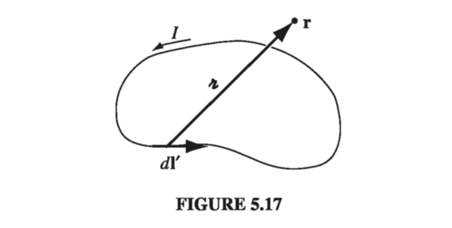
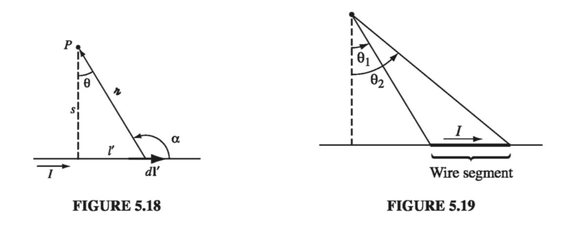

5.2: The Biot-Savart Law
5.2.1: Steady Currents
Stationary charges produce electric fields that are constant in time; hence the term electrostatics. Steady currents produce magnetic fields that are constant in time; the theory of steady currents is called magnetostatics.
By "steady current" I mean a continuous flow that has been going on forever, without change and without piling up anywhere (some people call them "stationary currents"; to my ear, that's a contradiction in terms). Formally, electro/magnetostatics is the regime
at all places and all times. Of course, there's no such thing in practice as a truly steady current, any more than there is a truly stationary charge. In this sense, both electrostatics and magnetostatics describe artificial worlds that exist only in textbooks. However, they represent suitable approximations as long as the actual fluctuations are remote, or gradual - in fact, for most purposes magnetostatics applies very well to household currents, which alternate 120 times per second!
Notice that a moving point charge cannot possibly constitute a steady current. If it's here one instant, it's gone the next. This may seem like a minor thing to you, but it's a major headache for me. I developed each topic in electrostatics by starting out with the simple case of a point charge at rest; then I generalized to an arbitrary charge distribution by invoking the superposition principle. This approach is not open to us in magnetostatics because a moving point charge does not produce a static field in the first place. We are forced to deal with extended current distributions right from the start, and, as a result, the arguments are bound to be more cumbersome. When a steady current flows in a wire, its magnitude I must be the same all along the line; otherwise, charge would be piling up somewhere, and it wouldn't be a steady current. More generally, since in magnetostatics, the continuity equation (5.29) becomes
5.2.2: The Magnetic Field of a Steady Current
The magnetic field of a steady line current is given by the Biot-Savart law:
The integration is along the current path, in the direction of the flow; is an element of length along the wire, and , as always, is the vector from the source to the point r (Fig 5.17). The constant is called the permeability of free space:
This is an exact number, not an empirical constant. It serves to define the ampereThese units are such that B itself comes out in newtons per ampere-meter (as required by the Lorentz force law), or teslas (T):

As the starting point for magnetostatics, the Biot-Savart law plays a role analogous to Coulomb's law in electrostatics. Indeed, the dependence is common to both laws
Example 5.5
Find the magnetic field a distance s from a long straight wire carrying a steady current I (Fig 5.18).

Solution In the diagram, points out of the page, and has the magnitudeAlso, , so
and , so
The Biot-Savart law gives the magnetic field as
That is the field of any straight segment of wire, in terms of the initial and final angles and (Fig 5.19). Of course, a finite segment by itself could never support a steady current (where would the charge go when it got to the end?), but it might be a piece of some closed circuit, and would then represent its contribution to the total field. In the case of an infinite wire, and so we obtain
Notice that the field is inversely proportional to the distance from the wire - just like the electric field of an infinite line charge. In the region below the wire, B points into the page, and in general, it "circles around" the wire, in accordance with the right-hand rule
As an application, let's find the force of attraction between two long, parallel wires a distance d apart, carrying currents and (Fig 5.20). The field at (2) due to (1) is
and it points into the page. The Lorentz force law (in the form appropriate to line currents) predicts a force directed upwards (1), of magnitude
The total force, not surprisingly, is infinite, but the force per unit length is
If the currents are antiparallel (one up, one down), the force is repulsive - consistent again with the qualitative observations of Sect 5.1.1.

Example 5.6
Find the magnetic field a distance z above the center of a circular loop of radius R, which carries a steady current I (Fig 5.21)

The field attributable to the segment points as shown. As we integrate around the loop, sweeps out a cone. The horizontal components cancel, and the vertical components combine, to give
(Notice that dl' and are perpendicular, in this case; the factor of projects out the vertical component.) Now, and are constants, and is simply the circumference , so
For surface and volume currents, the Biot-Savart law becomes
and
respectively. You might be tempted to write down the corresponding formula for a moving point charge, using the "dictionary"
but this is simply wrong. As I mentioned earlier, a point charge does not constitute a steady current, and the Biot-Savart law, which only holds for steady currents, does not correctly determine its field.
The superposition principle applies to magnetic fields just as it does to electric firlds: if you have a collection of source currents, the net field is the (vector) sum of the fields due to each of them taken separately.